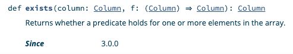
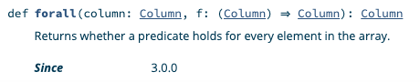
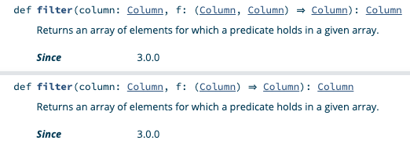
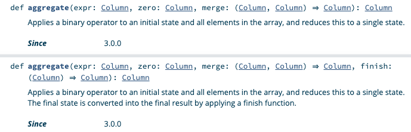

New Spark 3 Array Functions (exists, forall, transform, aggregate, zip_with)
Spark 3 has new array functions that make working with ArrayType columns much easier.
Spark developers previously needed to use UDFs to perform complicated array functions. The new Spark functions make it easy to process array columns with native Spark.
Some of these higher order functions were accessible in SQL as of Spark 2.4, but they didn't become part of the org.apache.spark.sql.functions object until Spark 3.0.
The transform and aggregate array functions are especially powerful general purpose functions. They provide functionality that's equivalent to map and fold in Scala and make it a lot easier to work with ArrayType columns.
You no longer need to revert to ugly UDFs to perform complex array manipulation. You can use native Spark!
exists
exists returns true if the predicate function returns true for any value in an array.
Suppose you have the following data and would like identify all arrays that contain at least one even number.
+---------+------------+
|person_id|best_numbers|
+---------+------------+
| a| [3, 4, 5]|
| b| [8, 12]|
| c| [7, 13]|
| d| null|
+---------+------------+
People "a" and "b" have at least one favorite number that's even, person "c" only has favorite odd numbers, and person "d" doesn't have any data.
Start by creating an isEven column function that returns true is a number is even:
Let's create a DataFrame and then run the org.apache.spark.sql.functions.exists function to append a even_best_number_exists column.
val df = spark.createDF(
List(
("a", Array(3, 4, 5)),
("b", Array(8, 12)),
("c", Array(7, 13)),
("d", null),
), List(
("person_id", StringType, true),
("best_numbers", ArrayType(IntegerType, true), true)
)
)
val resDF = df.withColumn(
"even_best_number_exists",
exists(col("best_numbers"), isEven)
)
Print the contents of the DataFrame and verify that even_best_number_exists contains the expected values.
resDF.show()
+---------+------------+-----------------------+
|person_id|best_numbers|even_best_number_exists|
+---------+------------+-----------------------+
| a| [3, 4, 5]| true|
| b| [8, 12]| true|
| c| [7, 13]| false|
| d| null| null|
+---------+------------+-----------------------+
You don't have to defined isEven as a named function. You can also use an anonymous function and get the same result.
df.withColumn(
"even_best_number_exists",
exists(
col("best_numbers"),
(col: Column) => col % 2 === lit(0)
)
)
Here's the exists method signature in the Spark 3 docs.

forall
Let's take a look at some arrays that contain words:
+--------------------------+
|words |
+--------------------------+
|[ants, are, animals] |
|[italy, is, interesting] |
|[brazilians, love, soccer]|
|null |
+--------------------------+
Let's use forall to identify the arrays with words that all begin with the letter "a":
val df = spark.createDF(
List(
(Array("ants", "are", "animals")),
(Array("italy", "is", "interesting")),
(Array("brazilians", "love", "soccer")),
(null),
), List(
("words", ArrayType(StringType, true), true)
)
)
val resDF = df.withColumn(
"uses_alliteration_with_a",
forall(
col("words"),
(col: Column) => col.startsWith("a")
)
)
Let's check out the contents of resDF and confirm it returns true for "ants are animals":
resDF.show(false)
+--------------------------+------------------------+
|words |uses_alliteration_with_a|
+--------------------------+------------------------+
|[ants, are, animals] |true |
|[italy, is, interesting] |false |
|[brazilians, love, soccer]|false |
|null |null |
+--------------------------+------------------------+
A more interesting function would be one that returns true for any array that uses alliteration. We'll solve that problem with the more advanced array functions.
Here's the forall method signature in the docs.

filter
Suppose you have the following data:
+-----------------------+
|words |
+-----------------------+
|[bad, bunny, is, funny]|
|[food, is, bad, tasty] |
|null |
+-----------------------+
Let's filter out all the array values equal to "bad":
val df = spark.createDF(
List(
(Array("bad", "bunny", "is", "funny")),
(Array("food", "is", "bad", "tasty")),
(null),
), List(
("words", ArrayType(StringType, true), true)
)
)
val resDF = df.withColumn(
"filtered_words",
filter(
col("words"),
(col: Column) => col =!= lit("bad")
)
)
Print the contents of resDF and make sure the filtered_words column does not contain the word "bad".
resDF.show(false)
+-----------------------+------------------+
|words |filtered_words |
+-----------------------+------------------+
|[bad, bunny, is, funny]|[bunny, is, funny]|
|[food, is, bad, tasty] |[food, is, tasty] |
|null |null |
+-----------------------+------------------+
The filter method is overloaded to take a function that accepts either two or one column argument.

Send me an example of a filter invocation with a column function that takes two arguments if you can figure it out.
transform
Suppose we have a dataset with arrays that contain fun cities.
+----------------------+
|places |
+----------------------+
|[New York, Seattle] |
|[Barcelona, Bangalore]|
|null |
+----------------------+
Let's add a fun_places column that makes it clear how fun all of these cities really are!
val df = spark.createDF(
List(
(Array("New York", "Seattle")),
(Array("Barcelona", "Bangalore")),
(null),
), List(
("places", ArrayType(StringType, true), true)
)
)
val resDF = df.withColumn(
"fun_places",
transform(
col("places"),
(col: Column) => concat(col, lit(" is fun!"))
)
)
Print out resDF and confirm that is fun! has been appended all the elements in each array.
resDF.show(false)
+----------------------+--------------------------------------+
|places |fun_places |
+----------------------+--------------------------------------+
|[New York, Seattle] |[New York is fun!, Seattle is fun!] |
|[Barcelona, Bangalore]|[Barcelona is fun!, Bangalore is fun!]|
|null |null |
+----------------------+--------------------------------------+
transform works similar to the map function in Scala. I'm not sure why they chose to name this function transform… I think array_map would have been a better name, especially because the Dataset#transform function is commonly used to chain DataFrame transformations.
Using a method name that already exists confuses folks that don't understand OOP. It also makes stuff hard to Google.
Let's not focus on the negative. org.apache.spark.functions.transform now exists and is an absolute joy to work with. This is a great addition to the API.
aggregate
Suppose you have a DataFrame with an array of numbers:
You can calculate the sum of the numbers in the array with the aggregate function.
val df = spark.createDF(
List(
(Array(1, 2, 3, 4)),
(Array(5, 6, 7)),
(null),
), List(
("numbers", ArrayType(IntegerType, true), true)
)
)
val resDF = df.withColumn(
"numbers_sum",
aggregate(
col("numbers"),
lit(0),
(col1: Column, col2: Column) => col1 + col2
)
)
Let's check out the result:
resDF.show()
+------------+-----------+
| numbers|numbers_sum|
+------------+-----------+
|[1, 2, 3, 4]| 10|
| [5, 6, 7]| 18|
| null| null|
+------------+-----------+
aggregate isn't the best name. This concept is referred to as reduce in Python, inject in Ruby, and fold in Scala. The function name aggregate makes you think about database aggregations, not reducing an array.
The aggregate function is amazingly awesome, despite the name. It opens the door for all types of interesting array reductions.
The aggregate docs are hard to follow because there are so many column arguments:

Let me know if you have a good example of an aggregate function that uses the finish function.
zip_with
Suppose we have a DataFrame with letters1 and letters2 columns that contain arrays of letters.
+--------+--------+
|letters1|letters2|
+--------+--------+
| [a, b]| [c, d]|
| [x, y]| [p, o]|
| null| [e, r]|
+--------+--------+
Let's zip the letters1 and letters2 arrays and join them with a *** delimiter. We want to convert [a, b] and [c, d] into a single array: [a***c, b***d].
val df = spark.createDF(
List(
(Array("a", "b"), Array("c", "d")),
(Array("x", "y"), Array("p", "o")),
(null, Array("e", "r"))
), List(
("letters1", ArrayType(StringType, true), true),
("letters2", ArrayType(StringType, true), true)
)
)
val resDF = df.withColumn(
"zipped_letters",
zip_with(
col("letters1"),
col("letters2"),
(left: Column, right: Column) => concat_ws("***", left, right)
)
)
Let's take a look at the results.
resDF.show()
+--------+--------+--------------+
|letters1|letters2|zipped_letters|
+--------+--------+--------------+
| [a, b]| [c, d]|[a***c, b***d]|
| [x, y]| [p, o]|[x***p, y***o]|
| null| [e, r]| null|
+--------+--------+--------------+
Ugly UDFs from the past
spark-daria implemented exists as a UDF and the code is pretty gross:
def exists[T: TypeTag](f: (T => Boolean)) = udf[Boolean, Seq[T]] { (arr: Seq[T]) =>
arr.exists(f(_))
}
The spark-daria forall UDF implementation was equally unappealing:
It'll be cool to get rid of this cruft in spark-daria.
The more spark-daria functions that are supported natively in Spark, the better.
Let's hope we can get the spark-daria createDF function merged in with the Spark codebase some day…
Conclusion
Spark 3 has added some new high level array functions that'll make working with ArrayType columns a lot easier.
The transform and aggregate functions don't seem quite as flexible as map and fold in Scala, but they're a lot better than the Spark 2 alternatives.
The Spark core developers really "get it". They're doing a great job continuing to make Spark better.